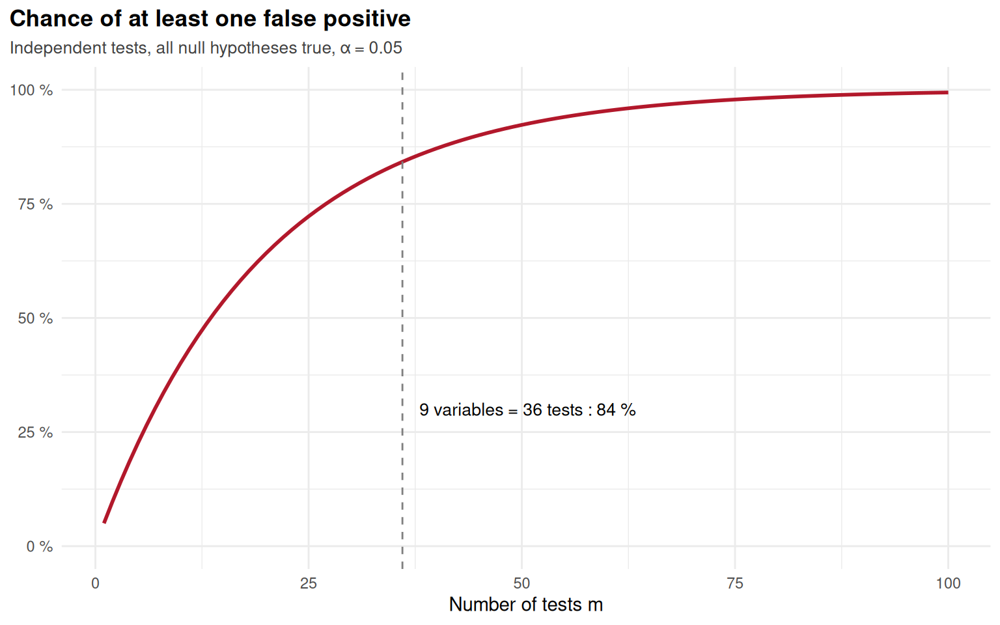
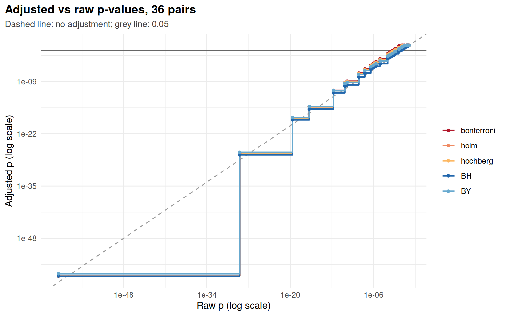
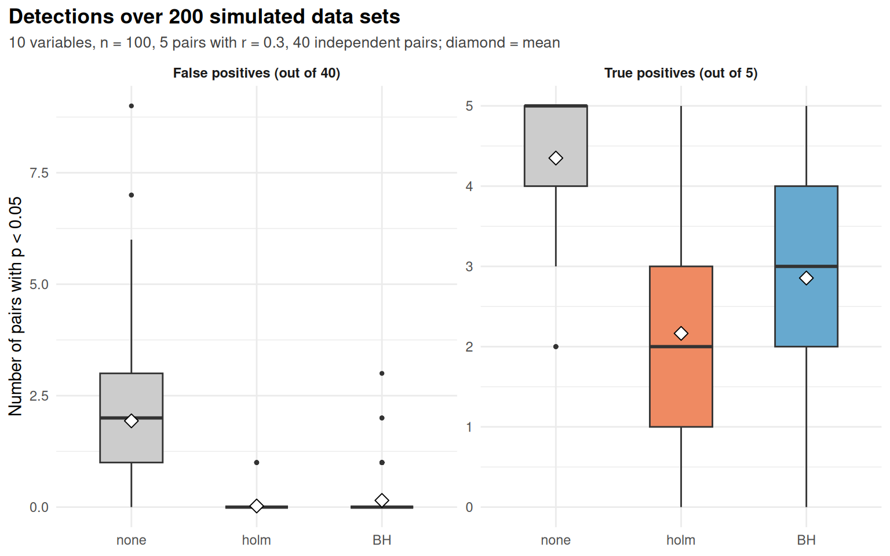
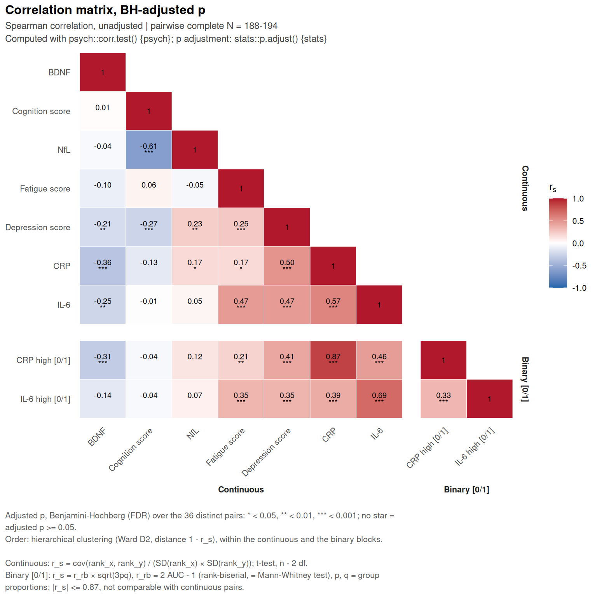

Corrections pour tests multiples
Une matrice de 9 variables contient 36 corrélations, donc 36 tests. Plus on fait de tests, plus on a de chances d’en trouver un « significatif » par hasard. Cette vignette explique pourquoi corrkit affiche par défaut des p-values brutes, ce que font les corrections disponibles, et comment choisir.
Le problème
Si les m tests sont indépendants et que toutes les hypothèses nulles sont vraies, la probabilité d’obtenir au moins un faux positif au seuil α est
\[P(\text{au moins un faux positif}) = 1 - (1 - \alpha)^m.\]
m <- 1:100
ggplot(data.frame(m = m, p = 1 - (1 - 0.05)^m), aes(m, p)) +
geom_line(colour = COR_PAL[["high"]], linewidth = 1) +
geom_vline(xintercept = choose(9, 2), linetype = "dashed", colour = "grey50") +
annotate("text", x = choose(9, 2) + 2, y = 0.3, hjust = 0, size = 3.5,
label = sprintf("9 variables = %d tests : %.0f %%", choose(9, 2), 100 * (1 - 0.95^choose(9, 2)))) +
scale_y_continuous(labels = function(v) paste0(100 * v, " %"), limits = c(0, 1)) +
labs(title = "Chance of at least one false positive", subtitle = "Independent tests, all null hypotheses true, α = 0.05",
x = "Number of tests m", y = NULL) +
theme_pub(11)
Avec 36 tests, on a 84 % de chances d’avoir au moins une étoile alors qu’aucune corrélation n’existe.
Pourquoi des p-values brutes par défaut
Dans la pratique, la plupart des analyses de corrélation publiées rapportent des p-values brutes, et les fonctions de base aussi :
| Fonction | Ajustement par défaut |
|---|---|
stats::cor.test(), ppcor::pcor.test(), Hmisc::rcorr()
|
aucun (p brute) |
ggcorrplot::cor_pmat(), corrplot::cor.mtest()
|
aucun : les étoiles ou croix de ggcorrplot et corrplot portent sur des p brutes |
psych::corr.test() |
adjust = "holm" ; matrice symétrique : p brutes sous la diagonale, ajustées au-dessus |
correlation::correlation() |
p_adjust = "holm" |
ggstatsplot::ggcorrmat() |
p.adjust.method = "holm" |
Une matrice de corrélation est souvent descriptive : on regarde la structure d’ensemble, pas chaque case comme une découverte. corrkit affiche donc par défaut des p-values brutes (p_adjust = "none"), et le dit dans la légende (« Raw p (no multiple-testing adjustment) »). Dès que les étoiles servent à conclure (« CRP est associé à la fatigue »), un ajustement est préférable, et il suffit d’un argument.
Deux façons de contrôler l’erreur
- FWER (family-wise error rate) : la probabilité d’avoir au moins un faux positif dans la famille. Strict : adapté aux conclusions confirmatoires, quand un seul faux positif coûte cher.
- FDR (false discovery rate) : la proportion attendue de faux positifs parmi les résultats déclarés significatifs. Plus permissif : adapté à une exploration où l’on accepte quelques fausses pistes parmi beaucoup de vraies.
Les méthodes de stats::p.adjust()
Avec les m p-values triées \(p_{(1)} \le \dots \le p_{(m)}\), les p-values ajustées \(\tilde p\) sont (chacune bornée à 1) :
p_adjust |
Contrôle | p-value ajustée | Hypothèse sur la dépendance |
|---|---|---|---|
"bonferroni" |
FWER | \(\tilde p_{i} = m\, p_{i}\) | aucune |
"holm" |
FWER | \(\tilde p_{(i)} = \max_{j \le i} (m - j + 1)\, p_{(j)}\) | aucune ; toujours au moins aussi puissante que Bonferroni |
"hochberg" |
FWER | \(\tilde p_{(i)} = \min_{j \ge i} (m - j + 1)\, p_{(j)}\) | indépendance ou dépendance positive |
"hommel" |
FWER | procédure fermée fondée sur le test de Simes | indépendance ou dépendance positive |
"BH" (= "fdr") |
FDR | \(\tilde p_{(i)} = \min_{j \ge i} \frac{m}{j}\, p_{(j)}\) | indépendance ou dépendance positive |
"BY" |
FDR | BH multiplié par \(\sum_{k=1}^{m} 1/k\) | aucune |
Sur les données d’exemple, les p ajustées par chaque méthode, en fonction des p brutes :
cm <- cor_compute(d, vars)
meths <- c("bonferroni", "holm", "hochberg", "BH", "BY")
pp <- do.call(rbind, lapply(meths, function(m)
data.frame(method = m, raw = cm$table$p, adjusted = p.adjust(cm$table$p, m))))
pp$method <- factor(pp$method, levels = meths)
ggplot(pp, aes(raw, adjusted, colour = method)) +
geom_abline(linetype = "dashed", colour = "grey60") +
geom_hline(yintercept = 0.05, colour = "grey40", linewidth = 0.3) +
geom_step(linewidth = 0.8) + geom_point(size = 1.2) +
scale_x_log10() + scale_y_log10() +
scale_colour_manual(values = c(bonferroni = "#B2182B", holm = "#EF8A62", hochberg = "#FDB863",
BH = "#2166AC", BY = "#67A9CF")) +
labs(title = "Adjusted vs raw p-values, 36 pairs", subtitle = "Dashed line: no adjustment; grey line: 0.05",
x = "Raw p (log scale)", y = "Adjusted p (log scale)", colour = NULL) +
theme_pub(11)
sapply(c(none = "none", setNames(meths, meths)),
function(m) sum(cor_compute(d, vars, p_adjust = m)$table$p_adj < 0.05))
#> none bonferroni holm hochberg BH BY
#> 23 19 19 19 23 21Ce que l’on gagne et ce que l’on perd : simulation
On simule 200 jeux de 10 variables (n = 100), dont 5 paires vraiment corrélées (r = 0,3) et 40 paires indépendantes, et l’on compte, pour chaque méthode, les vrais positifs (paires corrélées détectées) et les faux positifs.
set.seed(2026)
sim_one <- function(n = 100, rho = 0.3) {
X <- matrix(rnorm(n * 10), n, 10, dimnames = list(NULL, paste0("V", 1:10)))
for (k in 1:5) X[, 2 * k] <- rho * X[, 2 * k - 1] + sqrt(1 - rho^2) * X[, 2 * k] # pairs (1,2), (3,4)...
L <- cor_compute(as.data.frame(X), colnames(X), method = "pearson", engine = "stats", ci = NULL)$table
truth <- paste(L$X, L$Y) %in% paste0("V", 2 * (1:5) - 1, " V", 2 * (1:5))
do.call(rbind, lapply(c("none", "holm", "BH"), function(m) {
sig <- p.adjust(L$p, m) < 0.05
data.frame(method = m, true_pos = sum(sig & truth), false_pos = sum(sig & !truth))
}))
}
res <- do.call(rbind, replicate(200, sim_one(), simplify = FALSE))
res$method <- factor(res$method, levels = c("none", "holm", "BH"))
summ <- aggregate(cbind(true_pos, false_pos) ~ method, data = res, FUN = mean)
summ$at_least_one_fp <- tapply(res$false_pos > 0, res$method, mean)[as.character(summ$method)]
summ
#> method true_pos false_pos at_least_one_fp
#> 1 none 4.350 1.935 0.810
#> 2 holm 2.165 0.025 0.025
#> 3 BH 2.855 0.150 0.125long <- rbind(data.frame(method = res$method, what = "True positives (out of 5)", value = res$true_pos),
data.frame(method = res$method, what = "False positives (out of 40)", value = res$false_pos))
ggplot(long, aes(method, value, fill = method)) +
geom_boxplot(width = 0.5, show.legend = FALSE, outlier.size = 0.8) +
stat_summary(fun = mean, geom = "point", shape = 23, size = 3, fill = "white") +
facet_wrap(~ what, scales = "free_y") +
scale_fill_manual(values = c(none = "grey80", holm = "#EF8A62", BH = "#67A9CF")) +
labs(title = "Detections over 200 simulated data sets",
subtitle = "10 variables, n = 100, 5 pairs with r = 0.3, 40 independent pairs; diamond = mean",
x = NULL, y = "Number of pairs with p < 0.05") +
theme_pub(11)
Sans correction, on détecte le plus de vraies corrélations, mais presque chaque jeu de données contient au moins un faux positif. Holm élimine presque tous les faux positifs, au prix de corrélations réelles manquées. BH se situe entre les deux.
Corriger dans corrkit
Une matrice
p_adjust ajuste sur les k(k − 1)/2 paires distinctes ; les étoiles portent alors sur les p ajustées, et la légende donne la méthode et la famille.
plot(cor_compute(d, vars, p_adjust = "BH", labels = lab), title = "Correlation matrix, BH-adjusted p")
use_adj = FALSE affiche les étoiles des p brutes d’un objet ajusté ; le tableau long montre les deux colonnes côte à côte :
tbl_cor(cor_compute(d, vars, p_adjust = "holm", labels = lab), layout = "long", sort_by = "abs")| Spearman correlations | |||||||
| Spearman correlation, unadjusted | pairwise complete N = 188–194 | Computed with psych::corr.test() {psych}; p adjustment: stats::p.adjust() {stats} | |||||||
| Variable 1 | Variable 2 | Pair | n | rₛ | 95% CI | p (raw) | p (adjusted) |
|---|---|---|---|---|---|---|---|
| CRP | CRP high [0/1] | cont × bin | 194 | 0.87 | [0.82, 0.90] | < 0.001 | < 0.001 *** |
| IL-6 | IL-6 high [0/1] | cont × bin | 194 | 0.69 | [0.61, 0.76] | < 0.001 | < 0.001 *** |
| NfL | Cognition score | cont × cont | 188 | -0.61 | [-0.69, -0.51] | < 0.001 | < 0.001 *** |
| CRP | IL-6 | cont × cont | 188 | 0.57 | [0.46, 0.66] | < 0.001 | < 0.001 *** |
| CRP | Depression score | cont × cont | 188 | 0.50 | [0.38, 0.61] | < 0.001 | < 0.001 *** |
| IL-6 | Depression score | cont × cont | 188 | 0.47 | [0.34, 0.57] | < 0.001 | < 0.001 *** |
| IL-6 | Fatigue score | cont × cont | 189 | 0.47 | [0.34, 0.57] | < 0.001 | < 0.001 *** |
| IL-6 | CRP high [0/1] | cont × bin | 188 | 0.46 | [0.33, 0.57] | < 0.001 | < 0.001 *** |
| Depression score | CRP high [0/1] | cont × bin | 188 | 0.41 | [0.28, 0.53] | < 0.001 | < 0.001 *** |
| CRP | IL-6 high [0/1] | cont × bin | 188 | 0.39 | [0.26, 0.51] | < 0.001 | < 0.001 *** |
| CRP | BDNF | cont × cont | 188 | -0.36 | [-0.48, -0.23] | < 0.001 | < 0.001 *** |
| Depression score | IL-6 high [0/1] | cont × bin | 188 | 0.35 | [0.22, 0.47] | < 0.001 | < 0.001 *** |
| Fatigue score | IL-6 high [0/1] | cont × bin | 189 | 0.35 | [0.21, 0.47] | < 0.001 | < 0.001 *** |
| CRP high [0/1] | IL-6 high [0/1] | bin × bin | 188 | 0.33 | [0.20, 0.46] | < 0.001 | < 0.001 *** |
| BDNF | CRP high [0/1] | cont × bin | 188 | -0.31 | [-0.44, -0.17] | < 0.001 | < 0.001 *** |
| Depression score | Cognition score | cont × cont | 188 | -0.27 | [-0.40, -0.12] | < 0.001 | 0.005 ** |
| Depression score | Fatigue score | cont × cont | 188 | 0.25 | [0.11, 0.39] | < 0.001 | 0.008 ** |
| IL-6 | BDNF | cont × cont | 188 | -0.25 | [-0.38, -0.10] | < 0.001 | 0.011 * |
| NfL | Depression score | cont × cont | 188 | 0.23 | [0.09, 0.37] | 0.001 | 0.023 * |
| BDNF | Depression score | cont × cont | 188 | -0.21 | [-0.35, -0.07] | 0.003 | 0.056 |
| Fatigue score | CRP high [0/1] | cont × bin | 188 | 0.21 | [0.06, 0.34] | 0.005 | 0.076 |
| CRP | NfL | cont × cont | 188 | 0.17 | [0.03, 0.31] | 0.018 | 0.277 |
| CRP | Fatigue score | cont × cont | 188 | 0.17 | [0.02, 0.31] | 0.019 | 0.277 |
| BDNF | IL-6 high [0/1] | cont × bin | 188 | -0.14 | [-0.28, 0.01] | 0.058 | 0.748 |
| CRP | Cognition score | cont × cont | 188 | -0.13 | [-0.27, 0.01] | 0.069 | 0.830 |
| NfL | CRP high [0/1] | cont × bin | 188 | 0.12 | [-0.03, 0.26] | 0.094 | 1.000 |
| BDNF | Fatigue score | cont × cont | 189 | -0.10 | [-0.24, 0.05] | 0.175 | 1.000 |
| NfL | IL-6 high [0/1] | cont × bin | 188 | 0.07 | [-0.08, 0.21] | 0.347 | 1.000 |
| Fatigue score | Cognition score | cont × cont | 188 | 0.06 | [-0.09, 0.20] | 0.435 | 1.000 |
| NfL | Fatigue score | cont × cont | 189 | -0.05 | [-0.20, 0.10] | 0.493 | 1.000 |
| IL-6 | NfL | cont × cont | 188 | 0.05 | [-0.10, 0.19] | 0.510 | 1.000 |
| Cognition score | CRP high [0/1] | cont × bin | 188 | -0.04 | [-0.19, 0.11] | 0.584 | 1.000 |
| Cognition score | IL-6 high [0/1] | cont × bin | 188 | -0.04 | [-0.18, 0.11] | 0.606 | 1.000 |
| BDNF | NfL | cont × cont | 189 | -0.04 | [-0.18, 0.11] | 0.627 | 1.000 |
| BDNF | Cognition score | cont × cont | 188 | 0.01 | [-0.13, 0.16] | 0.839 | 1.000 |
| IL-6 | Cognition score | cont × cont | 188 | -0.01 | [-0.16, 0.14] | 0.891 | 1.000 |
| Pair: cont = continuous, bin = binary[0/1]. Bold = adjusted p < 0.05. | |||||||
| Adjusted p, Holm (FWER) over the 36 distinct pairs: * < 0.05, ** < 0.01, *** < 0.001; no star = adjusted p ≥ 0.05. | |||||||
| Continuous: r_s = cov(rank_x, rank_y) / (SD(rank_x) × SD(rank_y)); t-test, n − 2 df. | |||||||
| 95% CI: Fisher z transformation, SE = √(1.06 / (n − 3)) (Fieller et al. 1957); computed with correlation::cor_to_ci() {correlation}. | |||||||
| Binary [0/1]: r_s = r_rb × √(3pq), r_rb = 2 AUC − 1 (rank-biserial, ≡ Mann-Whitney test), p, q = group proportions; |r_s| ≤ 0.87, not comparable with continuous pairs. | |||||||
| Notation: Makowski D, Ben-Shachar MS, Patil I, Lüdecke D (2020), J Open Source Softw 5(51):2306, doi:10.21105/joss.02306. | |||||||
Des prédicteurs × des scores : choisir la famille
Pour une analyse croisée (cor_compute(d, x, y)), la question n’est pas seulement « quelle méthode ? » mais « sur quel ensemble de tests ? ». C’est l’argument adjust_by :
adjust_by |
Famille | Question |
|---|---|---|
"y" (défaut) |
les prédicteurs de chaque score (une colonne) | « quels biomarqueurs sont liés à la dépression ? », un score à la fois |
"x" |
les scores de chaque prédicteur (une ligne) | « à quoi CRP est-il lié ? », un biomarqueur à la fois |
"all" |
tous les tests du tableau | une seule question globale, ou un criblage |
bio <- c("CRP", "IL6", "BDNF", "NfL"); sc <- c("depression", "fatigue", "cognition")
c(raw = sum(cor_compute(d, bio, sc)$table$p < 0.05),
sapply(c(y = "y", x = "x", all = "all"),
function(a) sum(cor_compute(d, bio, sc, p_adjust = "holm", adjust_by = a)$table$p_adj < 0.05)))
#> raw y x all
#> 7 6 7 6tbl_cor(cor_compute(d, bio, sc, labels = lab, p_adjust = "BH", adjust_by = "y"), layout = "long")| Spearman correlations | ||||||
| Spearman correlation, unadjusted | N = 188–189 | Computed with stats::cor.test() {stats}; p adjustment: stats::p.adjust() {stats} | ||||||
| x | Pair | n | rₛ | 95% CI | p (raw) | p (adjusted) |
|---|---|---|---|---|---|---|
| Depression score | ||||||
| CRP | cont × cont | 188 | 0.50 | [0.38, 0.61] | < 0.001 | < 0.001 *** |
| IL-6 | cont × cont | 188 | 0.47 | [0.34, 0.57] | < 0.001 | < 0.001 *** |
| BDNF | cont × cont | 188 | -0.21 | [-0.35, -0.07] | 0.003 | 0.003 ** |
| NfL | cont × cont | 188 | 0.23 | [0.09, 0.37] | 0.001 | 0.002 ** |
| Fatigue score | ||||||
| CRP | cont × cont | 188 | 0.17 | [0.02, 0.31] | 0.019 | 0.038 * |
| IL-6 | cont × cont | 189 | 0.47 | [0.34, 0.57] | < 0.001 | < 0.001 *** |
| BDNF | cont × cont | 189 | -0.10 | [-0.24, 0.05] | 0.175 | 0.234 |
| NfL | cont × cont | 189 | -0.05 | [-0.20, 0.10] | 0.493 | 0.493 |
| Cognition score | ||||||
| CRP | cont × cont | 188 | -0.13 | [-0.27, 0.01] | 0.069 | 0.138 |
| IL-6 | cont × cont | 188 | -0.01 | [-0.16, 0.14] | 0.891 | 0.891 |
| BDNF | cont × cont | 188 | 0.01 | [-0.13, 0.16] | 0.839 | 0.891 |
| NfL | cont × cont | 188 | -0.61 | [-0.69, -0.51] | < 0.001 | < 0.001 *** |
| Row groups = family of the p adjustment (the 4 predictors of each column). | ||||||
| Pair: cont = continuous, bin = binary[0/1]. Bold = adjusted p < 0.05. | ||||||
| Adjusted p, Benjamini-Hochberg (FDR) over the 4 predictors of each column: * < 0.05, ** < 0.01, *** < 0.001; no star = adjusted p ≥ 0.05. | ||||||
| Continuous: r_s = cov(rank_x, rank_y) / (SD(rank_x) × SD(rank_y)); t-test, n − 2 df. | ||||||
| 95% CI: Fisher z transformation, SE = √(1.06 / (n − 3)) (Fieller et al. 1957); computed with correlation::cor_to_ci() {correlation}. | ||||||
| Notation: Makowski D, Ben-Shachar MS, Patil I, Lüdecke D (2020), J Open Source Softw 5(51):2306, doi:10.21105/joss.02306. | ||||||
En pratique
- Analyse descriptive ou exploratoire, matrice regardée dans son ensemble : p brutes (défaut), en le disant (la légende le fait) et sans conclure case par case.
-
Criblage de nombreuses associations pour sélectionner des pistes :
p_adjust = "BH". -
Conclusions confirmatoires sur quelques associations :
p_adjust = "holm"(préférable à Bonferroni, qu’il domine toujours). - Hypothèses fixées à l’avance, une ou deux corrélations : pas de correction nécessaire, mais il faut l’avoir dit avant de regarder les données.
- Dans tous les cas, nommer la famille : « BH sur les 6 prédicteurs de chaque score » n’a pas le même sens que « BH sur les 36 paires ».
Références
- Holm S (1979). A simple sequentially rejective multiple test procedure. Scandinavian Journal of Statistics 6(2):65-70.
- Hochberg Y (1988). A sharper Bonferroni procedure for multiple tests of significance. Biometrika 75(4):800-802.
- Hommel G (1988). A stagewise rejective multiple test procedure based on a modified Bonferroni test. Biometrika 75(2):383-386.
- Benjamini Y, Hochberg Y (1995). Controlling the false discovery rate: a practical and powerful approach to multiple testing. Journal of the Royal Statistical Society B 57(1):289-300.
- Benjamini Y, Yekutieli D (2001). The control of the false discovery rate in multiple testing under dependency. Annals of Statistics 29(4):1165-1188.